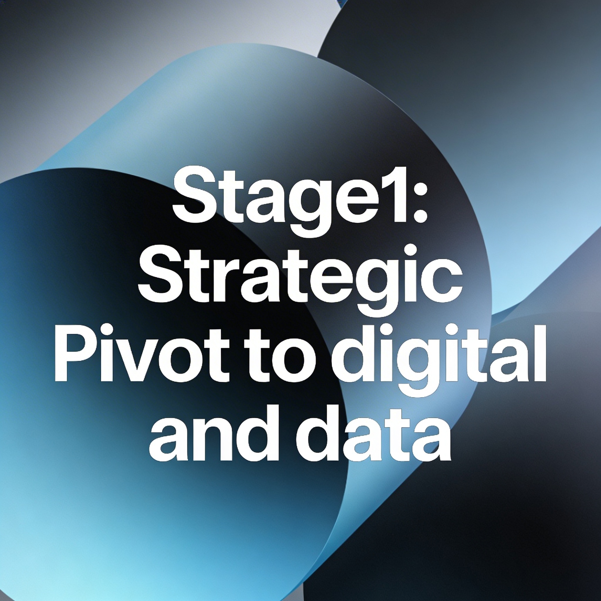
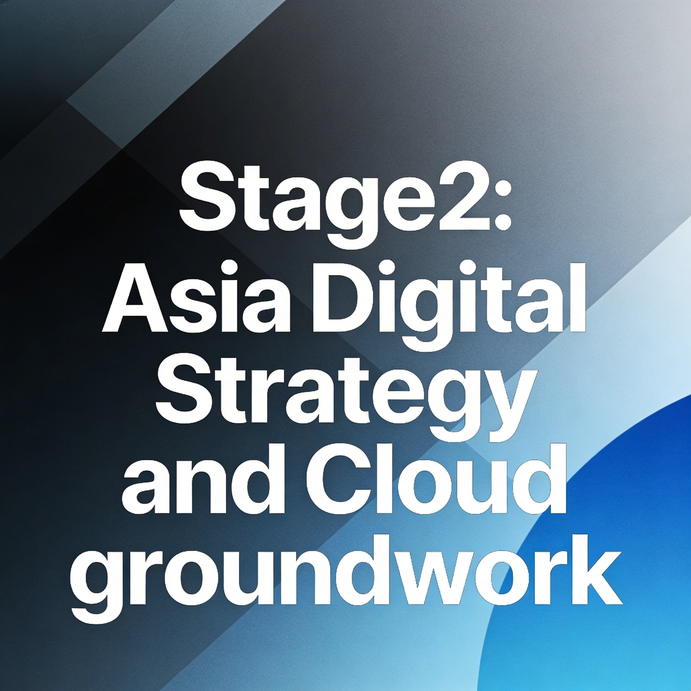

Stage 1: 2016

The bank undergoes a strategic pivot towards internet and mobile banking in key markets such as the UK and Hong Kong, including the rollout of voice and fingerprint recognition (HSBC, 2016). It also launches new innovation labs focused on artificial intelligence, data management and cyber security (HSBC, 2016). This all happens after the 2016 annual report identifies the adoption of rapidly evolving digital technologies by customers as “arguably the most transformative force” for the financial services industry (HSBC, 2016).
Stage 2: 2017-2018

HSBC sets up a new “digital first” strategy model in Asian regions that it defines as high growth, including a plan to implement a new digital banking platform in the Pearl River Delta, pilot WeChat banking and virtual
teller machines, and evaluate mobile wallet solutions on a partner by partner basis (HSBC, 2016). Additionally, HSBC begins migrating its analytics workloads toward cloud services, positioning cloud adoption as a strategic decision that enables faster product delivery, faster scaling and better use of data (Haynes, 2021; Google Cloud, 2018).
Stage 3: 2019-2020

A Huawei case study on HSBC revealed that the bank is
placing “partnership and data at the heart of digitalisation,”
highlighting how HSBC is leveraging cloud computing and big data analytics
to deliver more real time services and intelligent decision making (Huawei, 2019). Research and industry commentary on “smart branches” state that combining AI, 5G and cloud enables banks to deploy largely self service terminals and remote video devices that both improve customer interactions and reduce staff and property costs (Huawei, 2020; IDRBT, 2023).
Building on from 2019, HSBC’s Asia and Hong Kong digital plans emphasise mobile as a primary interaction channel, which is supported by plans for smart mobile onboarding that minimise branch visits, all of which depend on modern high bandwidth, low latency connectivity and in leading markets, emerging 5G networks (HSBC, 2020; HSBC, 2024).
Building on from 2019, HSBC’s Asia and Hong Kong digital plans emphasise mobile as a primary interaction channel, which is supported by plans for smart mobile onboarding that minimise branch visits, all of which depend on modern high bandwidth, low latency connectivity and in leading markets, emerging 5G networks (HSBC, 2020; HSBC, 2024).
Stage 4: 2021

HSBC launched and scaled its Strategic Time series and Risk Factors (STAR) platform,
a cloud native market risk data and analytics system on Google Cloud designed to manage
end to end risk data lifecycles (Google Cloud & HSBC, 2023).
Case evidence reports that STAR delivers roughly a 50–100 per cent reduction in unit risk calculation costs enabling more frequent and granular risk calculations and faster responses to regulatory change thereby demonstrating benefits in speed, scalability and cost efficiency (Google Cloud & HSBC, 2023).
Stage 5: 2022

HSBC majorly scales its infrastructure in 2022. Google Cloud case material reports the migration of more than 100 petabytes of data into cloud environments,
which further increases their compute power and supports more advanced modelling and financial crime analytics (Google Cloud, 2018; Google Cloud, 2022). This migration strengthens HSBC’s data maturity profile by making data more accessible for AI and analytics. This move also enhances governance and security, as encryption key management,
and monitoring is diversified across multiple regulators and regions (Haynes, 2021; Google Cloud, 2018).
Stage 6: 2023-2024

HSBC’s savings and money management app that was developed with Zühlke in response to under 35s’ unmet savings and investing needs, won The Banker’s “Best Innovation in Digital Banking – Mobile” award in 2023 (Clustre, 2024; Zühlke, 2023). Additionally, collaboration between HSBC and academia on responsible AI increases, including work with The Alan Turing Institute on AI ethics and governance frameworks (HSBC & The Alan Turing Institute, 2023).
In 2024 HSBC publishes its “Principles for the Ethical Use of Data and AI”, committing to privacy protection and personal data use only where appropriate, while maintaining accountability and explainability for AI systems, adapting governance as data and AI evolve (HSBC, 2024).
In 2024 HSBC publishes its “Principles for the Ethical Use of Data and AI”, committing to privacy protection and personal data use only where appropriate, while maintaining accountability and explainability for AI systems, adapting governance as data and AI evolve (HSBC, 2024).
Stage 7:2025

In the UK, HSBC completed an 18 month redesign of its mobile banking app. Senior digital leaders described the development as the biggest change to the app since its original 2012 launch (FinTech Futures, 2025). The redesign moves the architecture towards an event driven, microservices based model to improve adaptability and support greater personalisation. The app also included a speech enabled chatbot and in app access to many new features, with the goal of creating a primary 24/7 customer channel. (FinTech Futures, 2025; HSBC, 2025). In terms of governance, HSBC’s adoption of a global data and AI platform with automated controls, continuous risk monitoring and privacy protocols embedded into analytics workflows across 62 jurisdictions is cited as evidence that data and AI governance have become central pillars of its data maturity model (IMD, 2025; Sutara, 2025).